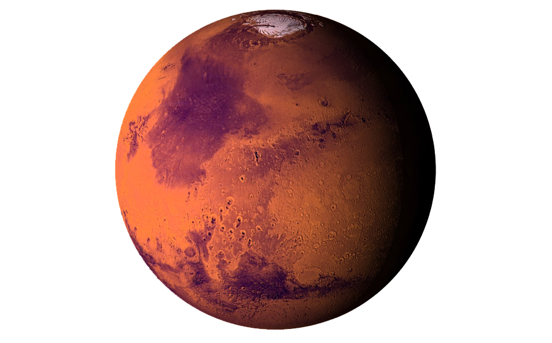

THE
RED
PLANET
" You want to wake up in the morning and think the future is going to be great - and that's what being a spacefaring civilization is all about. It's about believing in the future and thinking that the future will be better than the past. And I can't think of anything more exciting than going out there and being among the stars. "
- Elon Musk
MISSION MARS

For thr first time in the history of Earth. We are planning to send humans to Mars. Be a part of this amazing journey with SOI (Space Organization of India).
- Why Mars ?
- Journey to Mars
- Achievements
- Services
Why Mars?
There are several strategic, practical and scientific reasons for humans to explore Mars. Among them we know that Mars is the most accessible place in the solar system. Additionally, exploring Mars provides the opportunity to possibly answer origin and evolution of life questions, and could someday be a destination for survival of humankind. In the strategic sense, exploring Mars demonstrates our political and economic leadership as a nation, improves the quality of life on Earth, helps us learn about our home planet, and expands US leadership in the peaceful, international exploration of space. From a practical perspective we know that Mars is unique across the entire solar system in that it is a terrestrial planet with an atmosphere and climate, its geology is known to be very diverse and complex (like Earth), and it appears that the climate of Mars has changed over its history (like Earth). Learn MoreJourney
The Vehicle designed by SOI can lift 200 people in the outerspace at once. It has been successfully tested with the failure precentage of 0.001%. Once the spacecraft is in outer space, it will find launch window through which it will reach Mars in about 90 earth days. The space craft will enter the atmosphere of mars and find out the SOI mars base. Then it will land on mars with sheer ease. Learn MoreThe mars orbiter was the first ever satellite succesfully reaching the Martian Atmosphere. The satellite was mainly launched to access the weather conditions of Mars and is currently in operation and transmitting data succesfully REXAR, the first rover from SOI was the first ever robot to actually step on the surface of mars. The rover was equipped with modern advanced technolgies and use of intelliegence techniques. Till date, REXAR has been exploring the Martian Surface and getting deep insights despite of what could have got from artificial satellite. REXAR is powered by Solar energy sources which causes it to remain in function througout the time. The Ambition - I , the manned spaceship from SOI was the first spaceship to carry humans to MARS. The spaceship consisted of three crew members that were tested in likely conditions during training on earth. The crew successfully reached entered the martian atmoshpere after 222 days of travel in space. Learn More
Creating Memories for the Connected Traveler
Today's connected travelers are empowered and they view the travel experience holistically. They demand high quality digital and mobile experiences, competitive pricing across the value chain and expect to be recognized and responded to in real time according to their preferences or concerns. Learn More